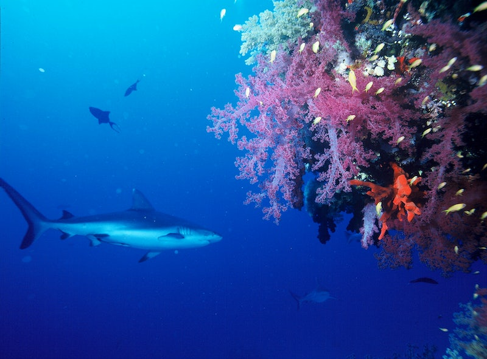

Coral reefs - the oceans rainforest

Corals are composed of thin plates, or layers, of calcium carbonate secreted over time by hundreds of soft bodied animals called coral polyps.
Polyps range in size from a pinhead to a foot in length. Each polyp lives in a symbiotic relationship with a host zooxanthellae that gives the coral its color.
Zooxanthellae take in carbon dioxide, process it through photosynthesis, and give off oxygen and other important nutrients that are then used by the host polyp.
As in all photosynthesizing organisms, this means that corals must be exposed to a sufficient amount of sunlight. This confines most corals to shallow waters that are clean and clear.
There are two kinds of corals: hard and soft. Hard corals (Scleractinia), such as brain, star, staghorn, elkhorn and pillar corals have rigid exoskeletons,
or corallites, that protect their soft delicate bodies. Soft corals (Gorgonians), such as sea fans,
sea whips, and sea rods, sway with the currents and lack an exoskeleton.
Coral reefs are one of the most biologically diverse ecosystems on earth, rivaled only by tropical rain forests.
They are made up not only of hard and soft corals, but also sponges, crustaceans, mollusks, fish, sea turtles, sharks, dolphins and much more.
Competition for resources such as food, space and sunlight are some of the primary factors in determining the abundances and diversity of organisms on a reef.
Each component of a coral reef is dependent upon and interconnected with countless other plants, animals and organisms.
This means that fluctuations in the abundance of one species can drastically alter both the diversity and abundances of others.
While natural causes such as hurricanes and other large storm events can be the stimulus for such alterations,
it is more commonly anthropological forces that effect these types of shifts in the ecosystem. Coral reefs are found in 109 countries throughout the world,
but it is estimated that they have been damaged or destroyed by human activity in at least 93 countries.
With each reef lost, countless forms of unique tropical marine life move closer to extinction and
indigenous communities are forced to move from their ancestral lands. The following map shows the locations of reefs throughout the world.
Coral reefs are located in three primary regions located between 20 degrees N and 20 degrees S of the equator:
the Indo-Pacific, the Western Atlantic, and the Red Sea. The Indo-Pacific region stretches from southeast Asia through Polynesia and
Australia, eastward across the Indian Ocean to Africa. This is the largest and richest assemblage of reefs in terms of coral and fish species present.
The Western Atlantic region stretches from Florida to Brazil, including Bermuda, the Bahamas, the Caribbean, Belize and the Gulf of Mexico.
The Red Sea is the smallest of the three regions, located between Africa and Saudi Arabia.
It is considered a separate region because of the high number of coral reef life found only in this area.